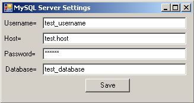

Server Options
 Server Options
Server Options
- In order to change the database server options, click "File -> Server Options"
- Enter the Username, Host, Password, and Database Table name.
- Click the "Save" button
- You will be prompted to restart the application. Press "OK" and restart.
- If you do not want to save the settings, just close out of the "MySQL Server Settings" window.
